Réalisations.
15 projets, de la maison individuelle au siège d'entreprise, pour découvrir l'approche de l'agence — de l'esquisse au chantier.
Maisons
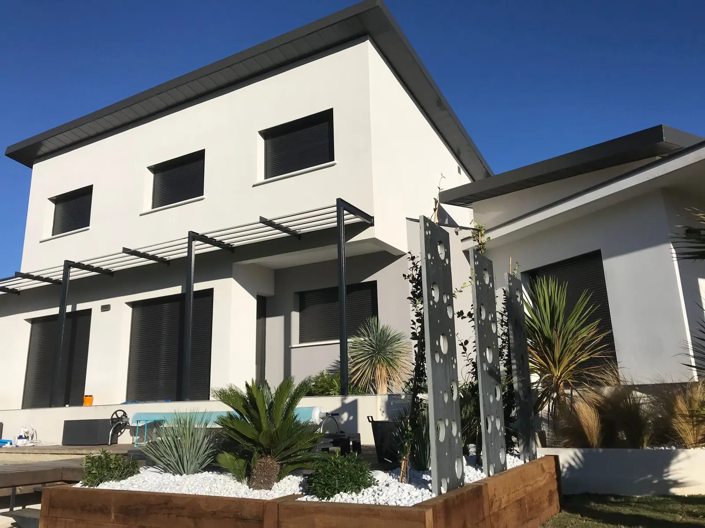
Villa C&D
Maisons
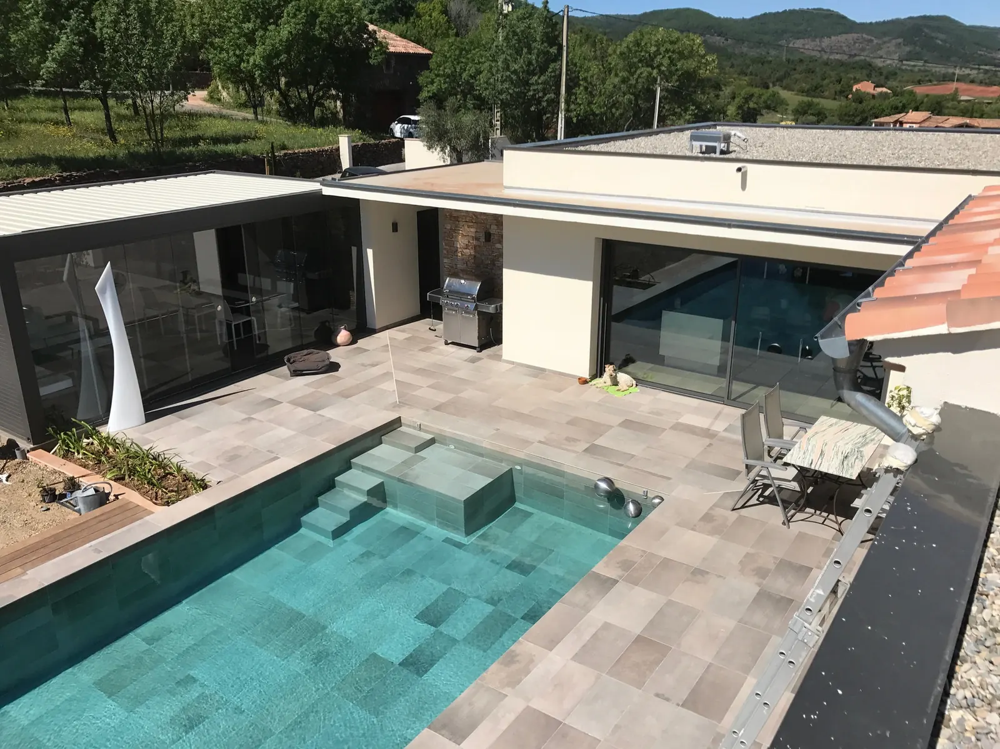
Villa VC
Maisons
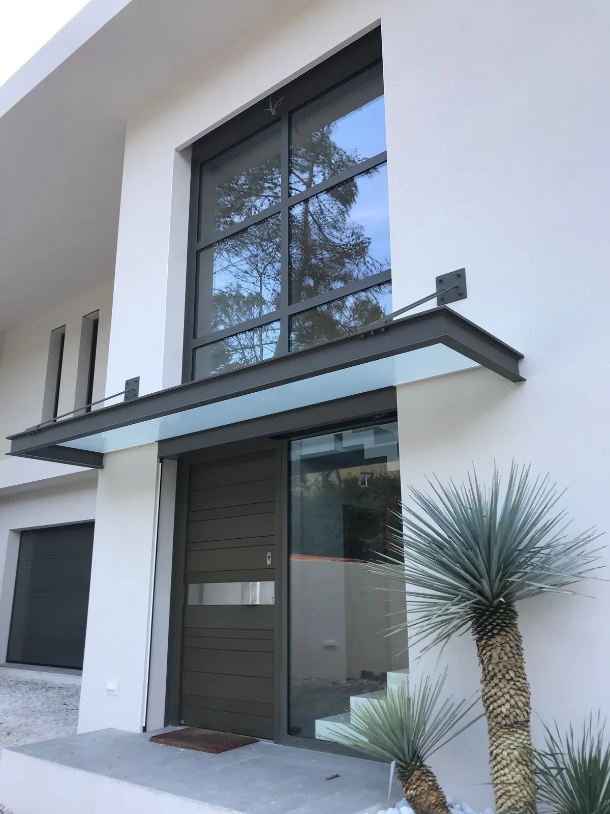
Villa L
Maisons
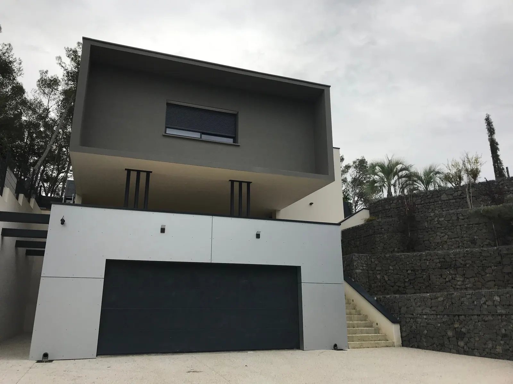
Villa G
Maisons
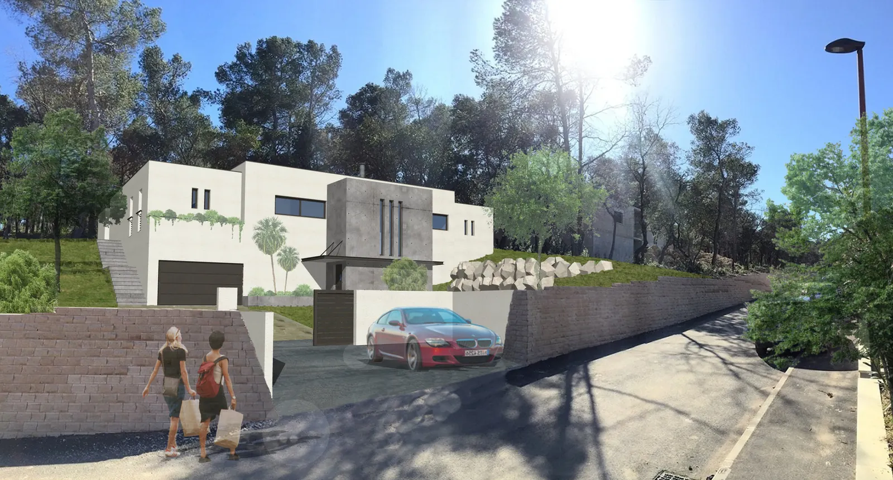
Villa A
Maisons
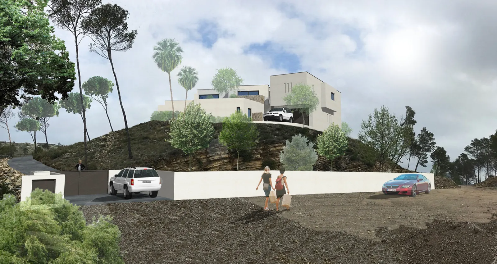
Villa R
Maisons
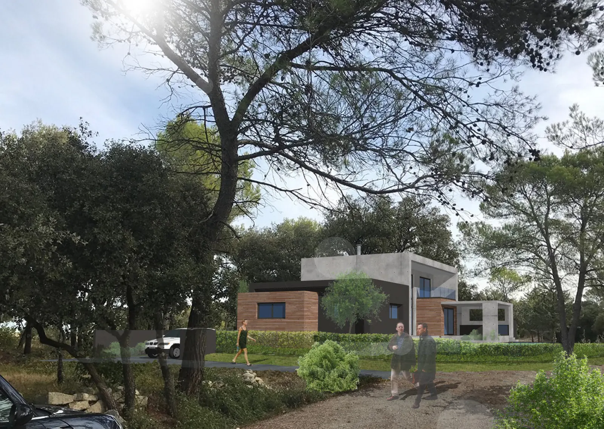
Villa M
Rénovation & extension
Extension B
Rénovation & extension
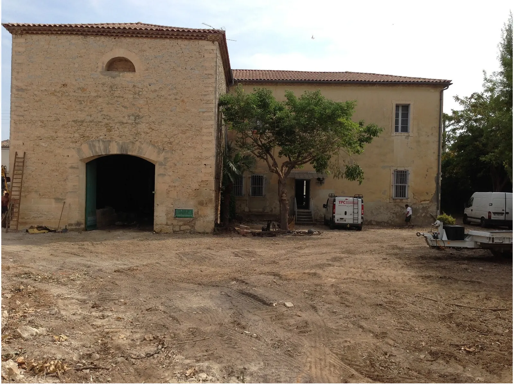
Villa Elena
Rénovation & extension
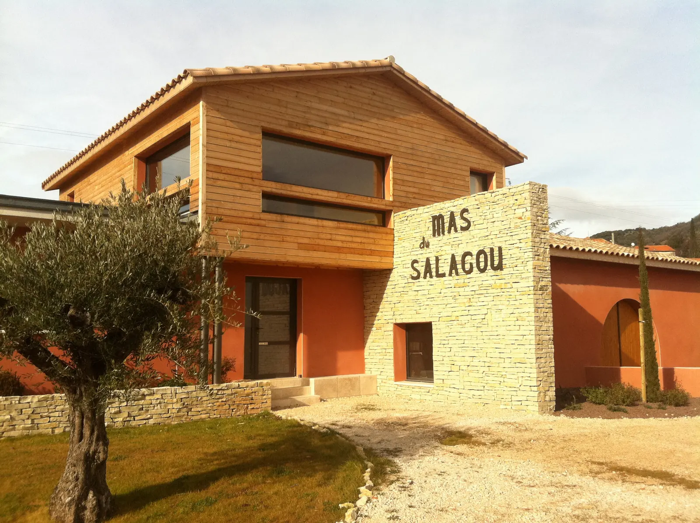
Maison d'affinage — Mas Salagou
Tertiaire
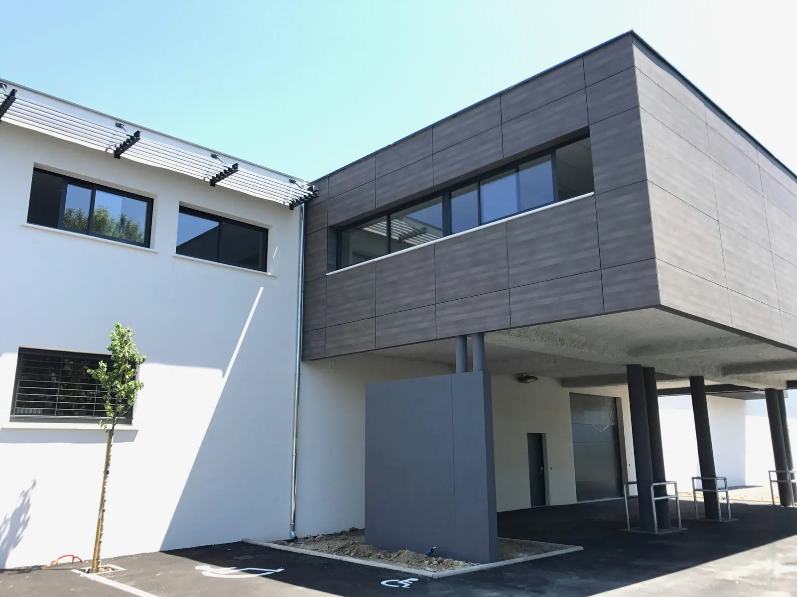
Siège social O
Tertiaire
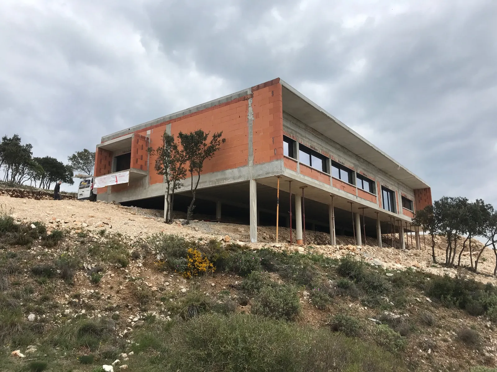
Siège social AT
Tertiaire
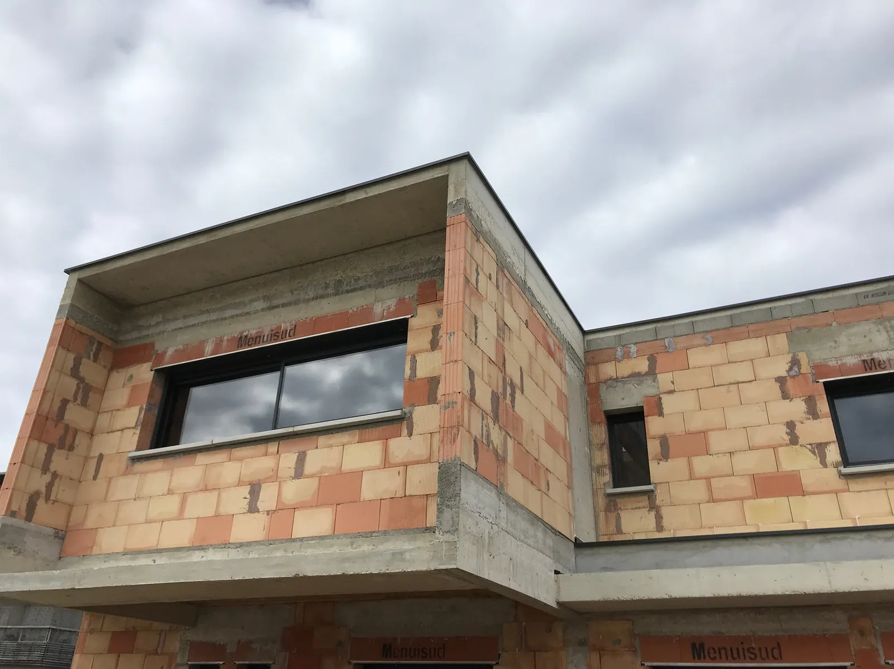
Office notarial B
Études & concepts
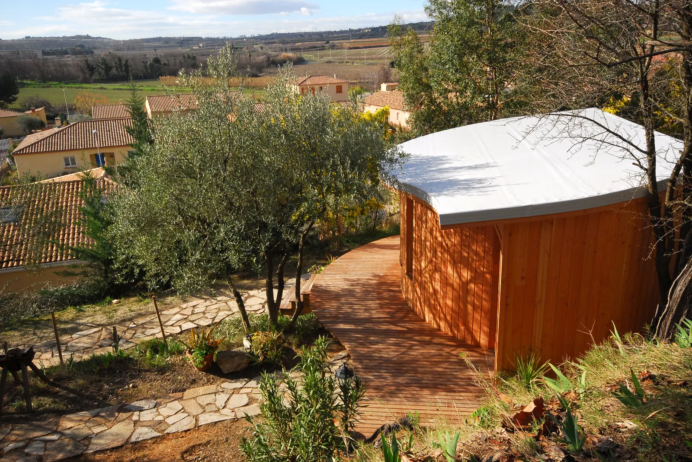
Concept Cassine
Études & concepts
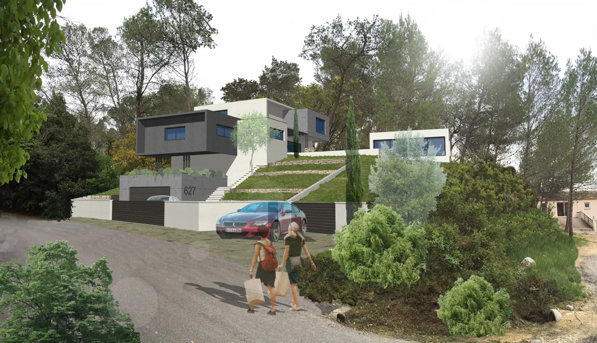